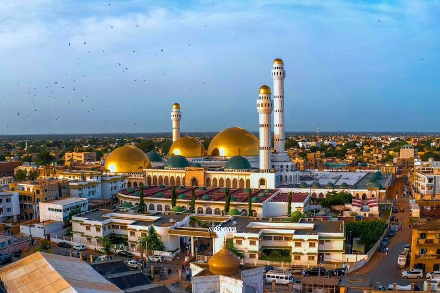

Tijaniyya
« Capitale de la Tijaniyya en Afrique noire »
Tivaouane — cœur de la Tijaniyya
Département de Tivaouane · 92 km de Dakar
Siège de la confrérie Tijaniyya en Afrique noire depuis l'installation d'El Hadji Malick Sy en 1902, Tivaouane est la ville spirituelle la plus importante du Sénégal après Touba. Son Gamou (Maouloud) rassemble chaque année jusqu'à 1,5 million de pèlerins.
Le pèlerinage se concentre autour de la Grande Mosquée, du mausolée d'El Hadji Malick Sy, de la mosquée Serigne Babacar Sy et de la zawiya.
1902Installation d'EM Sy
MilliersPèlerins au Gamou
4 sitesLieux de visite